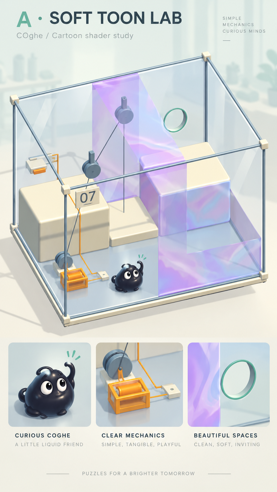
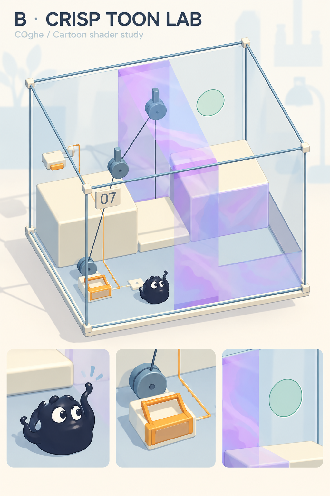

Đề xuất mỹ thuật · 14/10/2026COghe — phòng thí nghiệm cartoon
Hai hướng minh hoạ dựa trên màn 07 và sinh vật hiện tại. Giữ hộp kính, cơ quan có mã màu, mạch in, bảng số và luật bám kính. Đây là ảnh concept do công cụ tạo ảnh dựng, chưa phải ảnh Unity hay kết quả đo FPS. Chưa thay shader, model hoặc scene của game.
A · Soft Toon Lab — đề xuất chọn
Mảng sáng tối mềm, khối ngà ấm, kim loại satin, sinh vật đen ánh xanh với phản sáng rộng. Dễ thương bằng đôi mắt và tư thế, vẫn có cảm giác lỏng và có trọng lượng.

B · Crisp Toon Lab
Mảng sáng tối tách rõ hơn, màu nhấn tươi hơn và viền xanh đậm mảnh trên COghe cùng điểm tương tác. Hoạt hình rõ hơn; cần thử các màn đông cơ quan để kiểm soát độ rối.

Cách dựng khả thi trong Unity hiện có
- COghe: thử shader URP 3 mức sáng, chuyển tiếp mềm cho A, rõ hơn cho B; phản sáng lớn, ít chi tiết. Giữ mesh chất lỏng, biến dạng, mắt và luồng dữ liệu mực màu hiện có. Shader không tăng sức bám hay sửa mô phỏng.
- Cơ quan: giữ hình học và va chạm. Áp toon cho vỏ ngà, giảm phản xạ trên ray; tay nắm và đầu ra cùng màu. Mạch in sát bề mặt, không thay bằng thanh nổi như một số nét trong ảnh AI.
- Kính: tiếp tục shader trong suốt riêng, mép xanh nhẹ và phản xạ dựng sẵn. Không áp viền đen dày lên mọi mặt. Lỗ phải rỗng, viền mint vẫn phẳng và mỏng theo chuẩn 3,2 mm; vòng trong ảnh A không phải chỉ dẫn làm dày miệng lỗ.
- Vùng trơn: giữ footprint khớp SlipRegions và vẻ hologram pastel. Không làm sinh vật hoặc cơ quan nhạt đi chỉ vì nhìn xuyên qua nhiều lớp.
- Ánh sáng và nền: một nguồn chính có bóng, màu bù sáng đơn giản; nền lab vẽ sẵn tương phản thấp. Không cần đèn riêng mỗi máy, phản xạ thời gian thực, khúc xạ hoặc hiệu ứng làm mờ toàn màn hình.
- Viền: bản thử A ưu tiên không thêm lượt vẽ viền; B chỉ thử viền có chọn lọc. Chi phí của viền, kính nhiều lớp và shader mực phải được đo, không mặc định cartoon sẽ nhẹ hơn.
Phạm vi thử đề xuất
Làm một profile mỹ thuật thử tách khỏi Glass C đã duyệt: màn 01 kiểm tra sinh vật và bò kính, màn 07 kiểm tra cơ quan/lớp trơn, một Boss kiểm tra độ đọc khi đông chi tiết. So sánh cùng góc máy và thao tác ở bản cũ/mới trên OPPO và iPhone: thời gian khung hình CPU/GPU, P95, draw calls, các lớp trong suốt và nhiệt máy. Mục tiêu 60 FPS là tiêu chí thử, chưa phải kết quả. Chỉ nhân rộng khi hình ảnh và đo trên máy thật đạt yêu cầu.